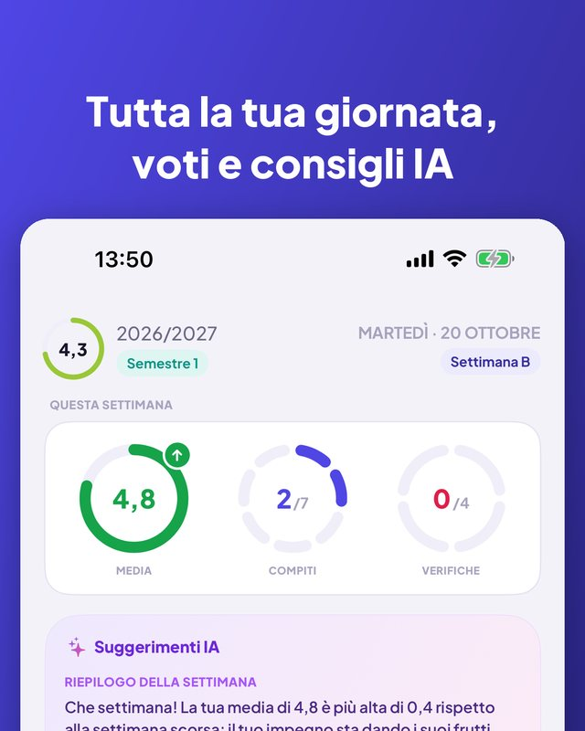
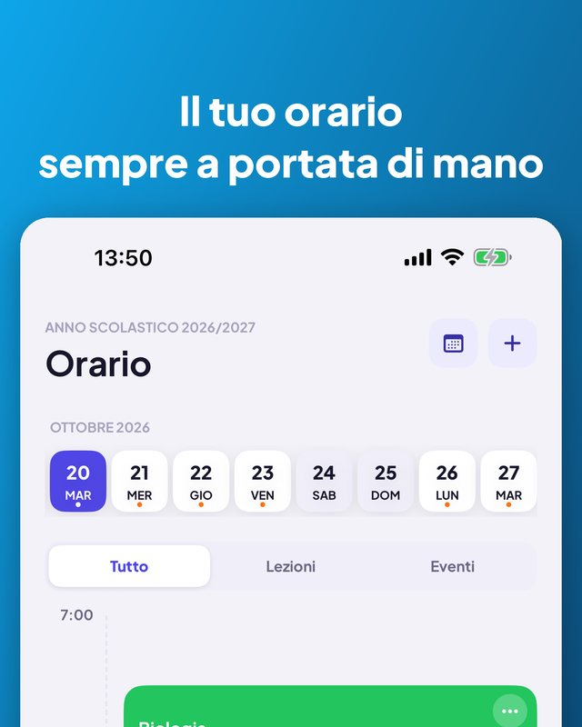
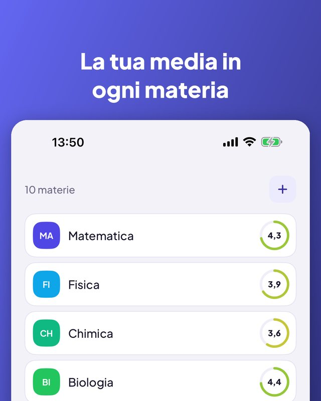
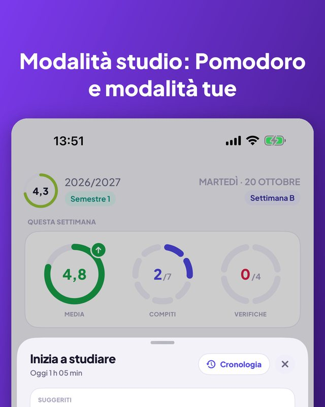
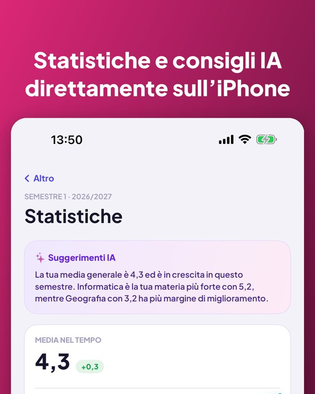

Kajet è un planner per la scuola e l’università. Tutta la giornata a colpo d’occhio, voti con media, compiti e verifiche con promemoria e un timer di studio con Pomodoro. Senza account, senza pubblicità.


Viste giorno e settimana, aule, orari.
Annullata, sostituita o in un’altra aula per un giorno.
Sport, musica, ripetizioni, con promemoria per uscire.
La prossima lezione nella schermata Home e di blocco.
Categorie tue, commenti e recuperi.
Andamento, materia migliore, cosa abbassa la media.
Crediti, voti finali, media ponderata ECTS.
Imposta una soglia e vedi i voti che ti servono.
Oggi, domani, questa settimana, dopo. Un tocco per spuntare.
Uno o tre giorni prima, la sera o all’ora che scegli.
Conto alla rovescia o Pomodoro, legato a una verifica.
7 giorni, un mese o un semestre, per materia.
Riepilogo settimanale e quando studiare. Solo sul tuo iPhone.
Chiedi la prossima lezione o aggiungi un voto a voce.
Ne inizi uno nuovo copiando il precedente.
Segue la lingua del tuo iPhone.



App, widget, Siri e comandi rapidi sono disponibili in 13 lingue. Kajet segue la lingua del tuo iPhone.
Nessun account, nessuna pubblicità, e i tuoi dati restano con te.
Pensata per il sistema scolastico e universitario polacco (voti da 1 a 6, scala universitaria da 2,0 a 5,0, ECTS), ma utilizzabile ovunque. Per iPhone con iOS 17 o successivo; i suggerimenti IA richiedono iOS 26 e Apple Intelligence.